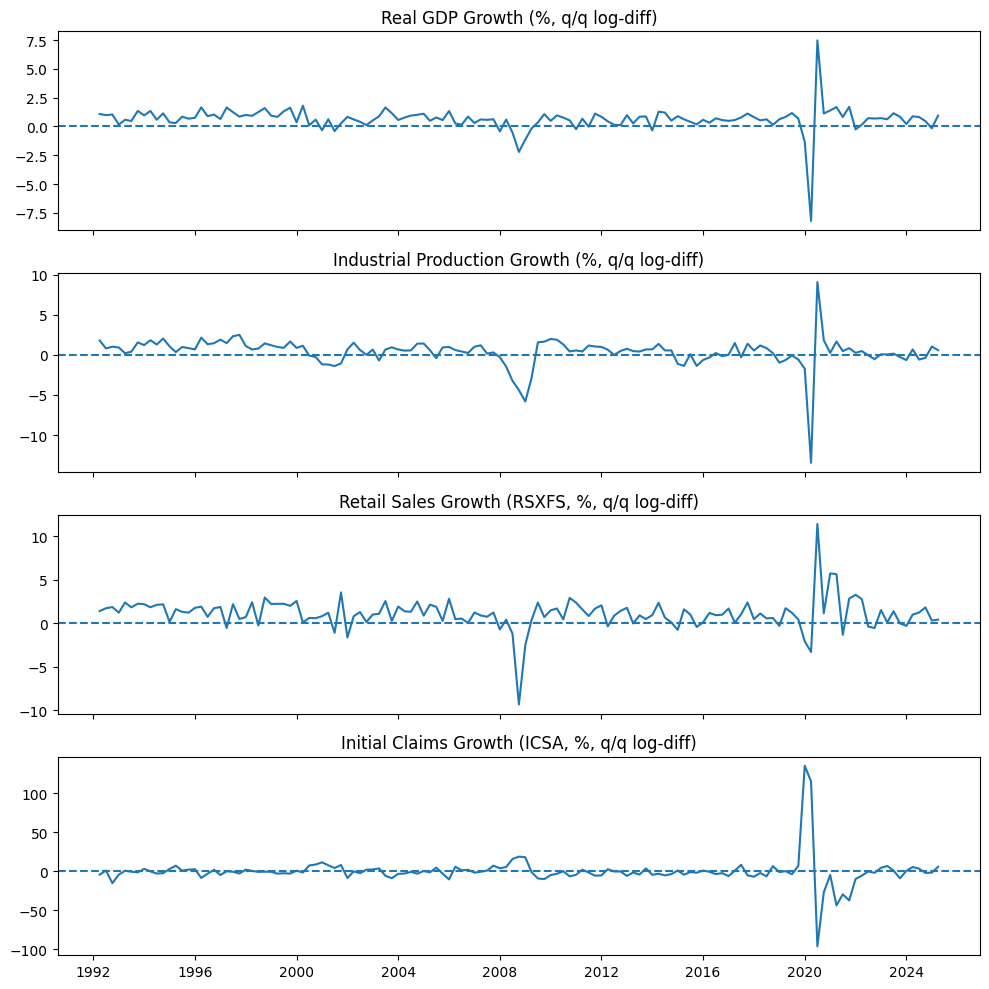
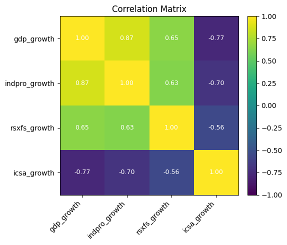
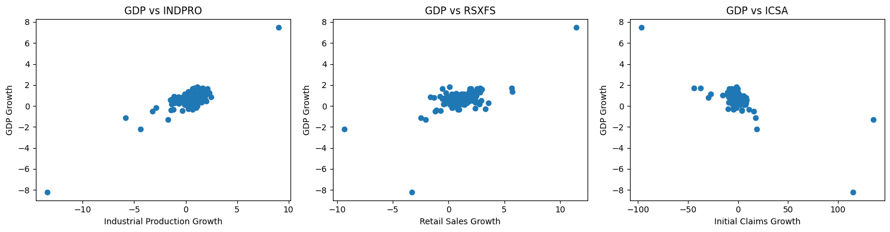
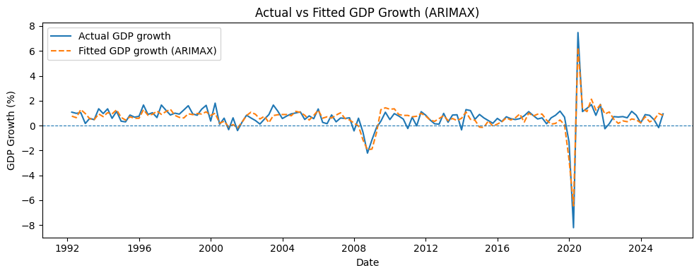
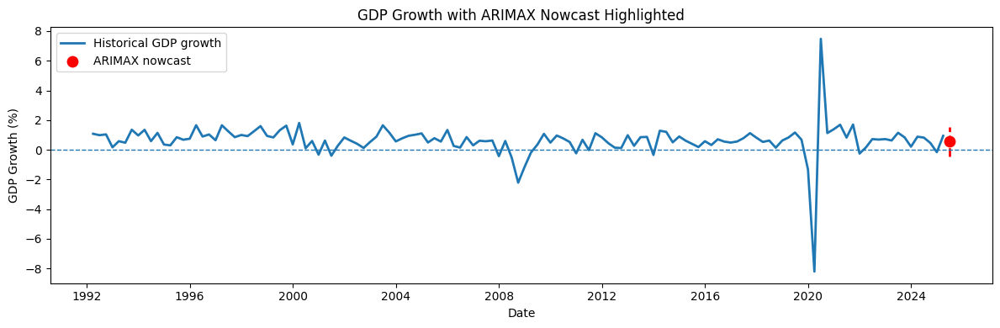

import pandas as pd
import numpy as np
import statsmodels.api as sm
import matplotlib.pyplot as plt
from sklearn.metrics import mean_absolute_error
from statsmodels.stats.outliers_influence import variance_inflation_factor
# =====================================================
# 1. Load FRED series
# =====================================================
BASE_URL = "https://fred.stlouisfed.org/graph/fredgraph.csv?id={series_id}"
def load_fred(series_id):
"""
Loads a FRED CSV directly from the URL.
Handles either DATE or observation_date as the date column.
Returns a DataFrame with:
index: DatetimeIndex
column: series_id (numeric)
"""
url = BASE_URL.format(series_id=series_id)
df = pd.read_csv(url)
# FRED sometimes uses DATE, sometimes observation_date
if "DATE" in df.columns:
date_col = "DATE"
else:
date_col = "observation_date"
df[date_col] = pd.to_datetime(df[date_col])
df = df.rename(columns={date_col: "date"})
df = df.set_index("date").sort_index()
# force numeric, turn "." into NaN etc.
df[series_id] = pd.to_numeric(df[series_id], errors="coerce")
return df[[series_id]]
# =====================================================
# 2. Download the series
# =====================================================
# Target: Real GDP (quarterly)
gdp = load_fred("GDPC1")
# Exogenous predictors (monthly/weekly)
indpro = load_fred("INDPRO") # Industrial Production
rsxfs = load_fred("RSXFS") # Advance Retail Sales: Retail Trade
icsa = load_fred("ICSA") # Initial Claims
# =====================================================
# 3. Convert everything to quarterly
# =====================================================
# GDP: already quarterly
gdp_q = gdp.copy()
gdp_q["period"] = gdp_q.index.to_period("Q")
gdp_q = gdp_q.groupby("period")["GDPC1"].last()
def to_quarterly_mean(df, col):
temp = df.copy()
temp["period"] = temp.index.to_period("Q")
return temp.groupby("period")[col].mean()
indpro_q = to_quarterly_mean(indpro, "INDPRO")
rsxfs_q = to_quarterly_mean(rsxfs, "RSXFS")
icsa_q = to_quarterly_mean(icsa, "ICSA")
# =====================================================
# 4. Merge into one quarterly DataFrame
# =====================================================
data_q = pd.concat(
[gdp_q, indpro_q, rsxfs_q, icsa_q],
axis=1,
join="inner"
)
data_q.columns = ["gdp_level", "indpro_level", "rsxfs_level", "icsa_level"]
data_q = data_q.dropna()
# =====================================================
# 5. Make growth rates (log-diffs, in %) and see VIF
# =====================================================
df = pd.DataFrame(index=data_q.index)
df["gdp_growth"] = 100 * np.log(data_q["gdp_level"]).diff()
df["indpro_growth"] = 100 * np.log(data_q["indpro_level"]).diff()
df["rsxfs_growth"] = 100 * np.log(data_q["rsxfs_level"]).diff()
df["icsa_growth"] = 100 * np.log(data_q["icsa_level"]).diff()
df = df.dropna() # drop first NA from differencing
y = df["gdp_growth"]
X = df[["indpro_growth", "rsxfs_growth", "icsa_growth"]]
# Compute VIF for each predictor
vif_data = pd.DataFrame()
vif_data["variable"] = X.columns
vif_data["VIF"] = [variance_inflation_factor(X.values, i) for i in range(X.shape[1])]
print("\n===== Variance Inflation Factors (VIF) =====")
print(vif_data)
# =====================================================
# 6. Fit ARIMA and ARIMAX on full data
# =====================================================
# ARIMA baseline (no exogenous variables)
model_arima_full = sm.tsa.SARIMAX(
y,
order=(1, 1, 1),
enforce_stationarity=False,
enforce_invertibility=False
)
results_arima_full = model_arima_full.fit(disp=False)
print("\n====== ARIMA(1,1,1) – no exogenous variables ======")
print(results_arima_full.summary())
# ARIMAX model (with exogenous predictors)
model_arimax_full = sm.tsa.SARIMAX(
y,
exog=X,
order=(1, 1, 1),
enforce_stationarity=False,
enforce_invertibility=False
)
results_arimax_full = model_arimax_full.fit(disp=False)
print("\n====== ARIMAX(1,1,1) – with exogenous variables ======")
print(results_arimax_full.summary())
# =====================================================
# 7. One-step-ahead forecast (ARIMA vs ARIMAX)
# =====================================================
X_next = X.iloc[[-1]] # last row as 1-row DataFrame for ARIMAX
# ARIMA forecast (no exog)
forecast_arima = results_arima_full.get_forecast(steps=1)
mean_forecast_arima = forecast_arima.predicted_mean.iloc[0]
conf_int_arima = forecast_arima.conf_int().iloc[0]
# ARIMAX forecast (with exog)
forecast_arimax = results_arimax_full.get_forecast(steps=1, exog=X_next)
mean_forecast_arimax = forecast_arimax.predicted_mean.iloc[0]
conf_int_arimax = forecast_arimax.conf_int().iloc[0]
print("\n====== One-step-ahead GDP growth forecast ======")
print(f"ARIMA point forecast: {mean_forecast_arima:.3f} %")
print("ARIMA 95% CI:")
print(conf_int_arima)
print(f"\nARIMAX point forecast: {mean_forecast_arimax:.3f} %")
print("ARIMAX 95% CI:")
print(conf_int_arimax)
# =====================================================
# 8. Evaluation: Naive vs ARIMA vs ARIMAX (MAE)
# =====================================================
# simple train-test split: last 20 quarters as test
split = -20
y_train, y_test = y.iloc[:split], y.iloc[split:]
X_train, X_test = X.iloc[:split], X.iloc[split:]
# Naive baseline: next quarter = previous quarter
naive_pred = y_test.shift(1) # previous observed value
naive_pred.iloc[0] = y_train.iloc[-1] # first test value = last train value
# ARIMA baseline (train/test)
model_arima_tt = sm.tsa.SARIMAX(
y_train,
order=(1, 1, 1),
enforce_stationarity=False,
enforce_invertibility=False
)
res_arima_tt = model_arima_tt.fit(disp=False)
pred_arima_tt = res_arima_tt.get_forecast(steps=len(y_test)).predicted_mean
# ARIMAX (train/test)
model_arimax_tt = sm.tsa.SARIMAX(
y_train,
exog=X_train,
order=(1, 1, 1),
enforce_stationarity=False,
enforce_invertibility=False
)
res_arimax_tt = model_arimax_tt.fit(disp=False)
pred_arimax_tt = res_arimax_tt.get_forecast(
steps=len(y_test),
exog=X_test
).predicted_mean
mae_naive = mean_absolute_error(y_test, naive_pred)
mae_arima = mean_absolute_error(y_test, pred_arima_tt)
mae_arimax = mean_absolute_error(y_test, pred_arimax_tt)
print("\n====== MAE comparison (test set) ======")
print(f"MAE naive: {mae_naive:.3f} percentage points")
print(f"MAE ARIMA: {mae_arima:.3f} percentage points")
print(f"MAE ARIMAX: {mae_arimax:.3f} percentage points")
# =====================================================
# 9. PLOTS
# =====================================================
# 9.1 Time series: GDP growth and predictors
fig, axes = plt.subplots(4, 1, figsize=(10, 10), sharex=True)
axes[0].plot(df.index.to_timestamp(), df["gdp_growth"])
axes[0].set_title("Real GDP Growth (%, q/q log-diff)")
axes[0].axhline(0, linestyle="--")
axes[1].plot(df.index.to_timestamp(), df["indpro_growth"])
axes[1].set_title("Industrial Production Growth (%, q/q log-diff)")
axes[1].axhline(0, linestyle="--")
axes[2].plot(df.index.to_timestamp(), df["rsxfs_growth"])
axes[2].set_title("Retail Sales Growth (RSXFS, %, q/q log-diff)")
axes[2].axhline(0, linestyle="--")
axes[3].plot(df.index.to_timestamp(), df["icsa_growth"])
axes[3].set_title("Initial Claims Growth (ICSA, %, q/q log-diff)")
axes[3].axhline(0, linestyle="--")
plt.tight_layout()
plt.show()
# 9.2 Correlation heatmap (for checking multicollinearity)
corr_vars = ["gdp_growth", "indpro_growth", "rsxfs_growth", "icsa_growth"]
corr = df[corr_vars].corr()
fig, ax = plt.subplots(figsize=(6, 5))
im = ax.imshow(corr, vmin=-1, vmax=1)
ax.set_xticks(range(len(corr_vars)))
ax.set_xticklabels(corr_vars, rotation=45, ha="right")
ax.set_yticks(range(len(corr_vars)))
ax.set_yticklabels(corr_vars)
ax.set_title("Correlation Matrix")
fig.colorbar(im, ax=ax, fraction=0.046, pad=0.04)
for i in range(len(corr_vars)):
for j in range(len(corr_vars)):
value = corr.iloc[i, j]
ax.text(
j, i,
f"{value:.2f}",
ha="center", va="center",
color="white" if abs(value) > 0.5 else "black",
fontsize=9
)
plt.tight_layout()
plt.show()
# 9.3 Scatter plots: GDP growth vs each predictor
fig, axes = plt.subplots(1, 3, figsize=(15, 4))
axes[0].scatter(df["indpro_growth"], df["gdp_growth"])
axes[0].set_xlabel("Industrial Production Growth")
axes[0].set_ylabel("GDP Growth")
axes[0].set_title("GDP vs INDPRO")
axes[1].scatter(df["rsxfs_growth"], df["gdp_growth"])
axes[1].set_xlabel("Retail Sales Growth")
axes[1].set_ylabel("GDP Growth")
axes[1].set_title("GDP vs RSXFS")
axes[2].scatter(df["icsa_growth"], df["gdp_growth"])
axes[2].set_xlabel("Initial Claims Growth")
axes[2].set_ylabel("GDP Growth")
axes[2].set_title("GDP vs ICSA")
plt.tight_layout()
plt.show()
# 9.4 Actual vs Fitted GDP Growth (ARIMAX)
fitted_arimax = results_arimax_full.fittedvalues
fig, ax = plt.subplots(figsize=(10, 4))
ax.plot(df.index.to_timestamp(), df["gdp_growth"], label="Actual GDP growth")
ax.plot(df.index.to_timestamp(), fitted_arimax, label="Fitted GDP growth (ARIMAX)", linestyle="--")
ax.axhline(0, linestyle="--", linewidth=0.8)
ax.set_title("Actual vs Fitted GDP Growth (ARIMAX)")
ax.set_xlabel("Date")
ax.set_ylabel("GDP Growth (%)")
ax.legend()
plt.tight_layout()
plt.show()
# 9.5 GDP Growth with ARIMAX Nowcast Highlighted
last_period = df.index[-1]
next_period = last_period + 1
next_date = next_period.to_timestamp()
fig, ax = plt.subplots(figsize=(12, 4))
ax.plot(df.index.to_timestamp(), df["gdp_growth"], label="Historical GDP growth", linewidth=2)
ax.scatter(next_date, mean_forecast_arimax, s=80, label="ARIMAX nowcast", zorder=5,color="red")
ax.vlines(
next_date,
conf_int_arimax["lower gdp_growth"],
conf_int_arimax["upper gdp_growth"],
linestyles="dashed",
linewidth=2,
colors="red"
)
ax.axhline(0, linestyle="--", linewidth=1)
ax.set_title("GDP Growth with ARIMAX Nowcast Highlighted")
ax.set_xlabel("Date")
ax.set_ylabel("GDP Growth (%)")
ax.legend()
plt.tight_layout()
plt.show()
===== Variance Inflation Factors (VIF) =====
variable VIF
0 indpro_growth 2.426437
1 rsxfs_growth 1.669008
2 icsa_growth 1.920007
====== ARIMA(1,1,1) – no exogenous variables ======
SARIMAX Results
==============================================================================
Dep. Variable: gdp_growth No. Observations: 133
Model: SARIMAX(1, 1, 1) Log Likelihood -202.195
Date: Wed, 26 Nov 2025 AIC 410.391
Time: 20:48:16 BIC 418.993
Sample: 06-30-1992 HQIC 413.886
- 06-30-2025
Covariance Type: opg
==============================================================================
coef std err z P>|z| [0.025 0.975]
------------------------------------------------------------------------------
ar.L1 -0.1628 0.053 -3.065 0.002 -0.267 -0.059
ma.L1 -0.9761 0.036 -26.909 0.000 -1.047 -0.905
sigma2 1.2898 0.038 33.875 0.000 1.215 1.364
===================================================================================
Ljung-Box (L1) (Q): 0.02 Jarque-Bera (JB): 6249.63
Prob(Q): 0.88 Prob(JB): 0.00
Heteroskedasticity (H): 10.17 Skew: -2.99
Prob(H) (two-sided): 0.00 Kurtosis: 36.44
===================================================================================
Warnings:
[1] Covariance matrix calculated using the outer product of gradients (complex-step).
====== ARIMAX(1,1,1) – with exogenous variables ======
SARIMAX Results
==============================================================================
Dep. Variable: gdp_growth No. Observations: 133
Model: SARIMAX(1, 1, 1) Log Likelihood -94.237
Date: Wed, 26 Nov 2025 AIC 200.474
Time: 20:48:16 BIC 217.679
Sample: 06-30-1992 HQIC 207.465
- 06-30-2025
Covariance Type: opg
=================================================================================
coef std err z P>|z| [0.025 0.975]
---------------------------------------------------------------------------------
indpro_growth 0.3366 0.022 15.022 0.000 0.293 0.380
rsxfs_growth 0.0533 0.027 1.961 0.050 2.73e-05 0.107
icsa_growth -0.0180 0.002 -10.489 0.000 -0.021 -0.015
ar.L1 -0.2055 0.091 -2.259 0.024 -0.384 -0.027
ma.L1 -0.9433 0.037 -25.470 0.000 -1.016 -0.871
sigma2 0.2466 0.032 7.589 0.000 0.183 0.310
===================================================================================
Ljung-Box (L1) (Q): 0.05 Jarque-Bera (JB): 6.56
Prob(Q): 0.83 Prob(JB): 0.04
Heteroskedasticity (H): 2.39 Skew: -0.34
Prob(H) (two-sided): 0.01 Kurtosis: 3.86
===================================================================================
Warnings:
[1] Covariance matrix calculated using the outer product of gradients (complex-step).
====== One-step-ahead GDP growth forecast ======
ARIMA point forecast: 0.538 %
ARIMA 95% CI:
lower gdp_growth -1.688063
upper gdp_growth 2.763974
Name: 2025Q3, dtype: float64
ARIMAX point forecast: 0.549 %
ARIMAX 95% CI:
lower gdp_growth -0.424056
upper gdp_growth 1.522350
Name: 2025Q3, dtype: float64
====== MAE comparison (test set) ======
MAE naive: 1.585 percentage points
MAE ARIMA: 9.384 percentage points
MAE ARIMAX: 0.446 percentage points



